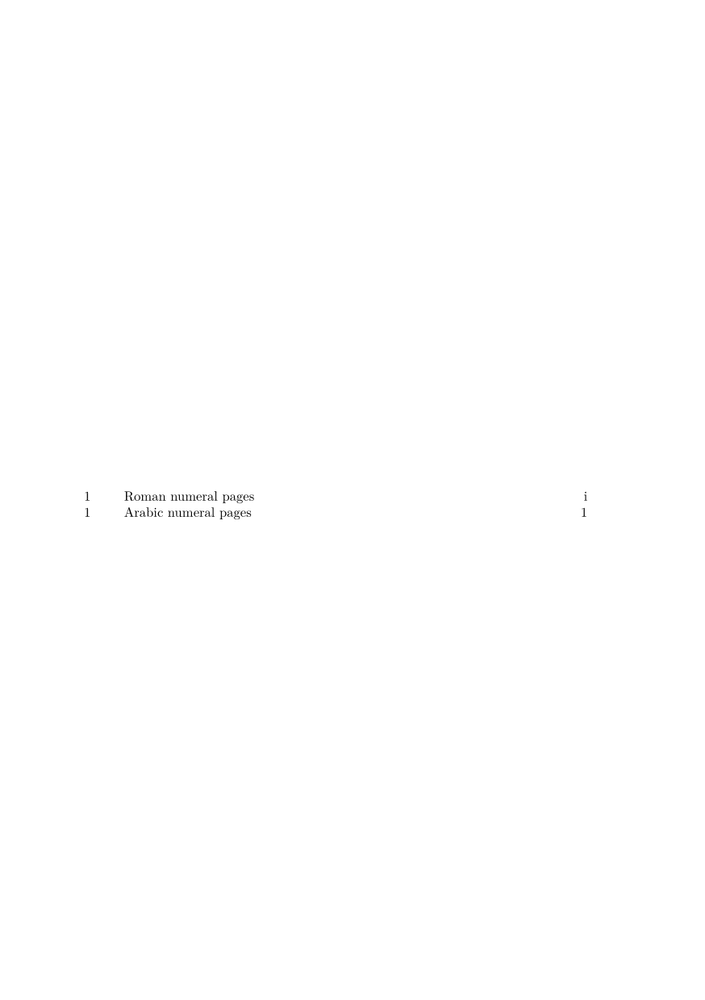

Syntax (autogenerated)
| \definesectionblock[...][...][...=...,...] | |
| [...] | name |
| [...] | name |
| ...=...,... | inherits from \setupsectionblock |
Syntax
| \definesectionblock[...][...,...=...,...] | |
| [...] | name |
| [...,...=...,...] | see \setupsectionblock |
Description
Example
One possible use of section blocks is to have different numbering systems for page numbers for different parts of a document. This example is slightly edited from Marco's answer to this TeX StackExchange question: https://tex.stackexchange.com/questions/108676/page-numbers-roman-number-and-arabic-numerals-in-context .
-
\usemodule[ipsum] % just used to easily fill several pages with content % Define a section block with lowercase roman numeral page numbers \definesectionblock[roman][romanpages] \definestructureconversionset [roman:pagenumber] [] [romannumerals] % Reset the page counter for the main text \startsectionblockenvironment [bodypart] \resetuserpagenumber \stopsectionblockenvironment \starttext \startstandardmakeup \placecontent % table of content to show how the page numbers are rendered \stopstandardmakeup \startromanpages \section{Roman numeral pages} \dorecurse{6}{\ipsum\par} \stopromanpages \startbodymatter \section{Arabic numeral pages} \dorecurse{6}{\ipsum\par} \stopbodymatter \stoptext
- 
See also
Help from ConTeXt-Mailinglist/Forum
All issues with: